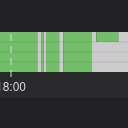
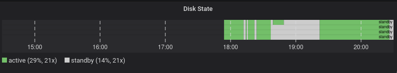

Überwachung Festplattenstatus mit Grafana

Updates
Ich hatte nach dem Update meines Raid mit größeren Platten festgestellt, dass der automatische Standby nach einiger Zeit Nicht-Benutzung nicht mehr funktionierte.
Trotzdem die Platten sich mittels hdparm noch sofort in den Standby-Modus versetzen ließen funktionierte der Idle-Timer nicht mehr. Ich hatte nachgelesen und stieß auf die Information, dass der mittels hdparm -B gesetzte Wert den Idle-Standby verhindert, wenn der angegebene Wert größer als 127 wäre. Ich versuchte diesen zu ändern und bekam für jede der im Raid befindlichen Platten eine Fehlermeldung - ich konnte ihn nicht ändern.
Ich stieß im Internet auf die Idee, statt hdparm einen service namens hd-idle zu nutzen. Nach Installation und Konfiguration mittels
HD_IDLE_OPTS="-i 0 -a /dev/sdb -i 600 -a /dev/sdc -i 600 -a /dev/sdd -i 600 -a /dev/sde -i 600 -l /var/log/hd-idle.log"
funktionierte es tatsächlich wieder: Nach 10 Minuten ohne Beschäftigung wechselten die Platten in den Standby-Modus.
Nun wollte ich dieses neu gewonnene Feature in meine Überwachung mittels Grafana einbauen. Das erwies sich als schwierig, denn ich konnte nur dann den Status active/standby ermitteln, wenn ich als Nutzer root unterwegs war. Ich wollte aber an Telegraf/InfluxDB/Grafana festhalten und nicht irgendetwas daneben zusammenhacken, Telegraf läuft aber nicht unter dem Nutzer root. Also teilte ich die Funktionalität auf: Ich schrieb ein Skript, das der Nutzer root per Cron ausführt - Dieses Skript schreibt den Status aller überwachten Festplatten in temporäre Dateien:
#!/bin/bash
mkdir -p /tmp/diskstats
sdbstat=`/usr/sbin/smartctl -i -n standby /dev/sdb|grep "Device is in"|cut -d ' ' -f 4`
if [ "$sdbstat" = "STANDBY" ]; then
echo -n "0" >"/tmp/diskstats/sdb"
else
echo -n "1" >"/tmp/diskstats/sdb"
fi
sdcstat=$(/sbin/hdparm -C /dev/sdc|grep "drive state is"|cut -d ':' -f 2 |rev|cut -d ' ' -f 1|rev)
if [ "$sdcstat" = "standby" ]; then
echo -n "0" >"/tmp/diskstats/sdc"
else
echo -n "1" >"/tmp/diskstats/sdc"
fi
sddstat=$(/sbin/hdparm -C /dev/sdd|grep "drive state is"|cut -d ':' -f 2 |rev|cut -d ' ' -f 1|rev)
if [ "$sddstat" = "standby" ]; then
echo -n "0" >"/tmp/diskstats/sdd"
else
echo -n "1" >"/tmp/diskstats/sdd"
fi
sdestat=$(/sbin/hdparm -C /dev/sde|grep "drive state is"|cut -d ':' -f 2 |rev|cut -d ' ' -f 1|rev)
if [ "$sdestat" = "standby" ]; then
echo -n "0" >"/tmp/diskstats/sde"
else
echo -n "1" >"/tmp/diskstats/sde"
fi
Wichtig ist hier, die Pfade zu den Programmen explizit anzugeben: Das Skript soll von Cron aufgerufen werden und erbt den extrem eingeschränkten Suchpfad PATH von Cron!
Ein anderes Skript, das ich dann über das exec-Plugin von Telegraf einband liest diese temporären Dateien aus und schreibt die Werte in die InfluxDB:
#!/bin/bash
HOST=$(hostname)
sdb=$(cat /tmp/diskstats/sdb)
echo "diskstat,host=${HOST},dev=/dev/sdb state=${sdb}i"
sdc=$(cat /tmp/diskstats/sdc)
echo "diskstat,host=${HOST},dev=/dev/sdc state=${sdc}i"
sdd=$(cat /tmp/diskstats/sdd)
echo "diskstat,host=${HOST},dev=/dev/sdd state=${sdd}i"
sde=$(cat /tmp/diskstats/sde)
echo "diskstat,host=${HOST},dev=/dev/sde state=${sde}i"
Eingebunden wird das Skript in Telegraf zum Beispiel so:
[[inputs.exec]]
commands = [ "/bin/bash /opt/telegraf/diskstat.sh" ]
timeout = "10s"
data_format = "influx"
Da die Werte nun in der InfluxDB stehen, kann ich den Status anschließend mittels Grafana visualisieren:

Grafana zeigt den Status der vier Festplatten im Raid an
Aktualisierung vom 15. Februar 2022
Artikel, die hierher verlinken
Spezielle Telegraf-Anpassungen für Rock64
20.12.2020
Obwohl mein letztes Vorhaben mit dem Rock64 kläglich gescheitert ist habe ich ihn in mein Netzwerklabor eingebaut - und das bedeutet, dass die 2-Faktor-Authentifizierung aktiviert ist und das System mittels Telegraf Daten an die Influx-DB meldet und mit Grafana überwacht werden kann:
Günstiges Arm64-Board mit Raspi-Formfaktor
12.12.2020
Ich habe ein neues Gerät in meinem Hardware-Zoo: Nachdem ich bereits einigeErfahrungen mit Raspis sammeln konnte, machte mich ein Kollege neulich auf eine günstige Variante aufmerksam, Erfahrungen mit ARM64 zu sammeln...


Vor 5 Jahren hier im Blog
-
Streaming Server mit Linux
17.08.2019
Ich habe schon länger darüber nachgedacht, einmal zu versuchen, einen Streaming-Server aufzubauen. Da es in letzter Zeit wieder einmal sehr war draußen ist, habe ich die Zeit, die ich vor der Hitze Schutz suchte dazu genutzt, diese Idee in die Praxis umzusetzen...
Weiterlesen...
Tags
Android Basteln C und C++ Chaos Datenbanken Docker dWb+ ESP Wifi Garten Geo Git(lab|hub) Go GUI Gui Hardware Java Jupyter Komponenten Links Linux Markdown Markup Music Numerik PKI-X.509-CA Python QBrowser Rants Raspi Revisited Security Software-Test sQLshell TeleGrafana Verschiedenes Video Virtualisierung Windows Upcoming...
Neueste Artikel
- Futro s920 Booten übers Netz
Ich habe hier bereits von den Anfängen meiner Versuche berichtet, Ersatz für die Raspis und vergleichbarer Hardware zu finden.
Weiterlesen... - LinkCollections 2024 VI
Nach der letzten losen Zusammenstellung (für mich) interessanter Links aus den Tiefen des Internet von 2024 folgt hier gleich die nächste:
Weiterlesen... -
 Online Werkzeuge
Online Werkzeuge
Eine Liste interessanter Werkzeuge zur Benutzung "on the road"...
Weiterlesen...
Manche nennen es Blog, manche Web-Seite - ich schreibe hier hin und wieder über meine Erlebnisse, Rückschläge und Erleuchtungen bei meinen Hobbies.
Wer daran teilhaben und eventuell sogar davon profitieren möchte, muß damit leben, daß ich hin und wieder kleine Ausflüge in Bereiche mache, die nichts mit IT, Administration oder Softwareentwicklung zu tun haben.
Ich wünsche allen Lesern viel Spaß und hin und wieder einen kleinen AHA!-Effekt...
PS: Meine öffentlichen GitHub-Repositories findet man hier - meine öffentlichen GitLab-Repositories finden sich dagegen hier.